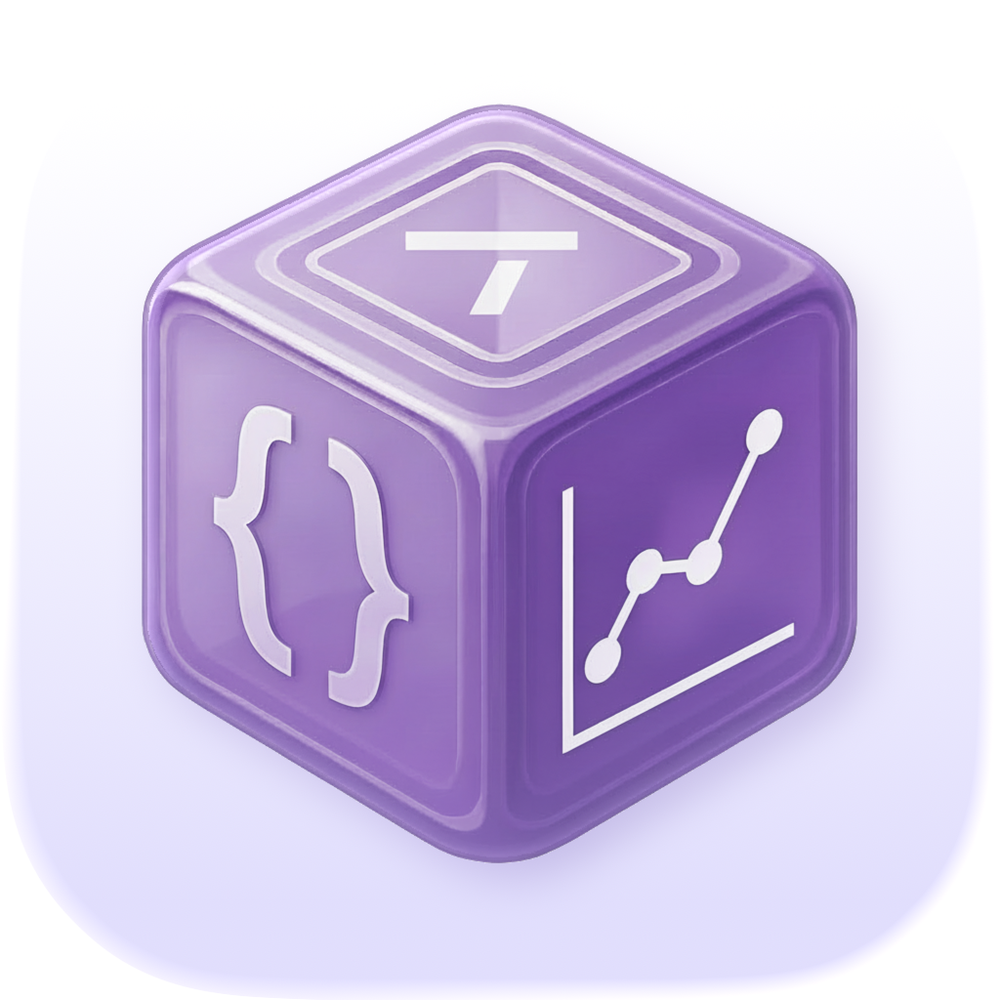
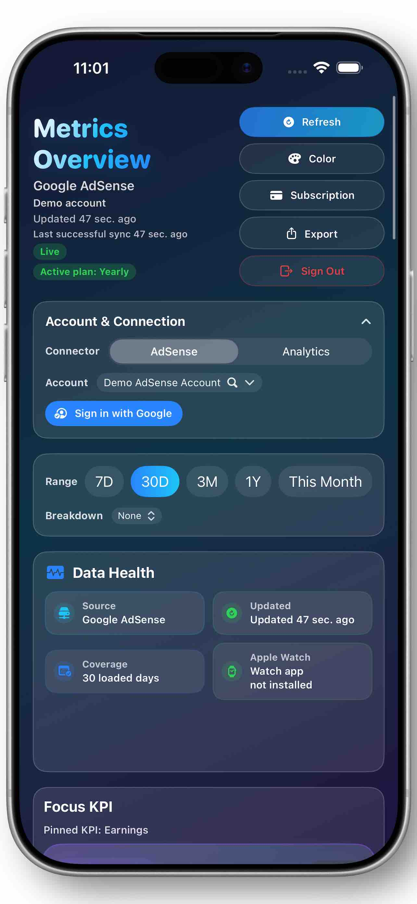
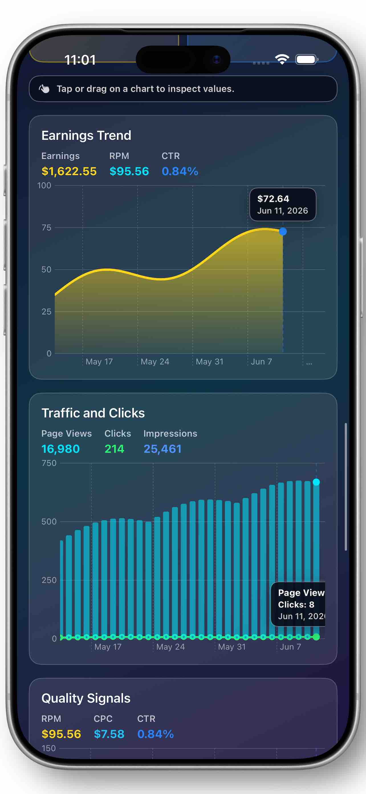
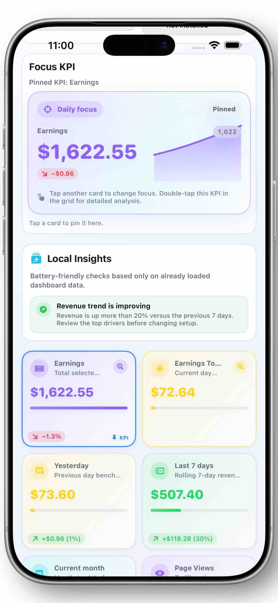
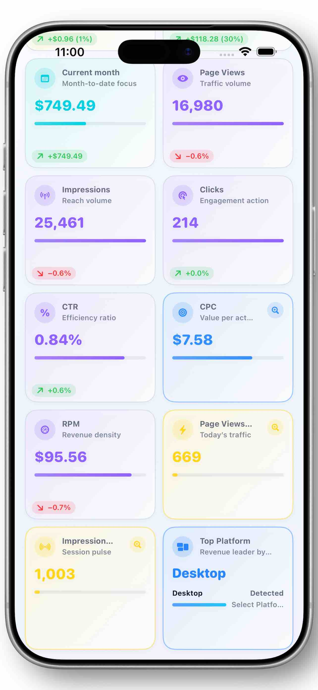
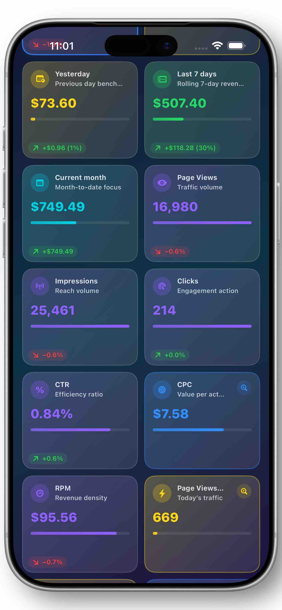
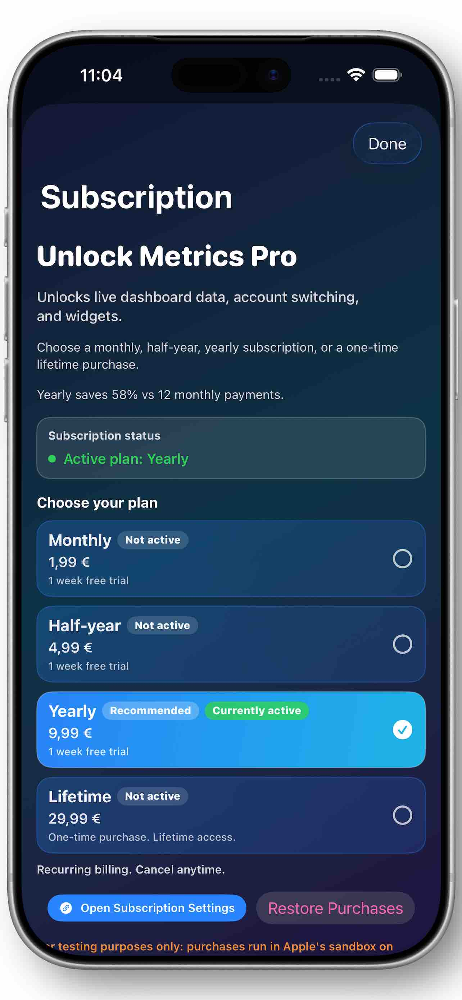
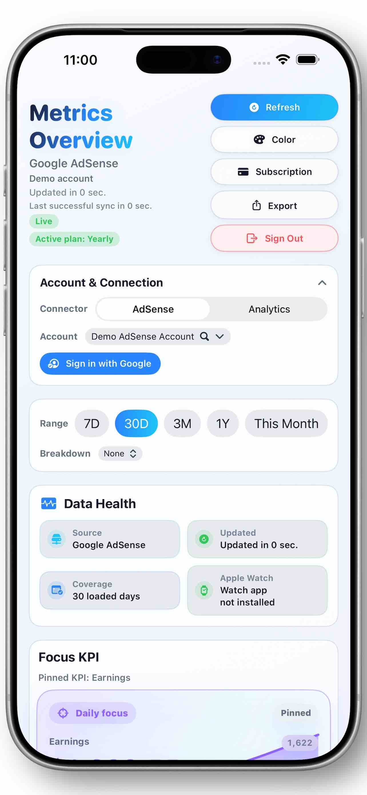
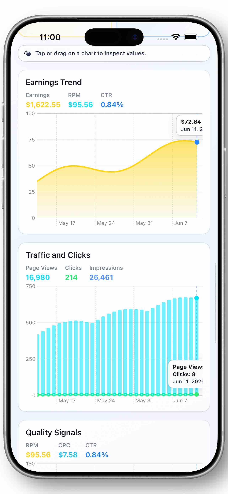
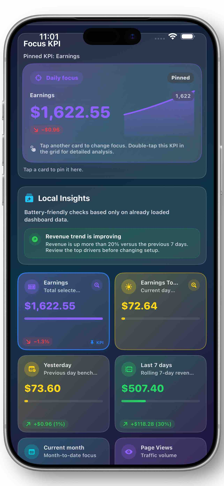

01
Live Google connectors
Choose Google AdSense or Google Analytics 4, connect with Google Sign-In, and sync the account data that matters for daily checks.
How access works
Metrics DataAdSense · GA4 · Widgets · Apple Watch
Metrics Data gives publishers a fast, focused view of Google AdSense and Google Analytics 4 KPIs across iPhone, iPad, Apple Watch, widgets, Smart Stack, and complications.

Focused dashboard
Choose Google AdSense or Google Analytics 4, connect with Google Sign-In, and sync the account data that matters for daily checks.
How access worksPin a focus KPI, inspect trend cards, open detailed charts, and compare latest, previous, average, minimum, and maximum values.
View cardsKeep earnings, traffic, RPM, CTR, and other KPIs close with Home Screen widgets, Apple Watch, Smart Stack widgets, and complications.
See widgets contextSwitch between light, dark, and vibrant dashboard or widget styles designed to stay readable while keeping the interface expressive.
Compare themesBuilt for publishers
"Open, check, understand, move on."
A compact analytics surface for creators and site owners who want clear daily signals without opening several full dashboards.
Product views
The gallery shows light and dark dashboard themes, detailed charts, KPI cards, focus states, and subscription access for live account sync.








Google account access
Metrics Data can be opened with demo data. A subscription unlocks Google Sign-In and live account sync for supported AdSense and GA4 data. The app does not provide a standalone account system, social profile login choice, or independent authentication backend.
This repository is intentionally restricted to public product information. It does not contain app source code, OAuth secrets, tokens, StoreKit configuration, signing material, account data, or app binaries.
Terms of UseReady for a clearer daily check?